O projeto consiste em fazer um jogo 2D usando a plataforma construct
> Paul Lumberjack é um lenhador do norte do Canadá, que vive sua vida tranquila perto da floresta. A irmã de Paul está desaparecida há algumas semanas. Em uma noite calma, um bilhete é introduzido por baixo de sua porta. Na carta consta uns convites para a mansão próxima a sua casa, a Mansão Bloodwall, na qual o anfitrião o convida para discutir o caso de sua irmã. Paul, assim que chega na mansão, descobre que o convite tinha segundas intenções.
Equipe e suas resposabilidades:
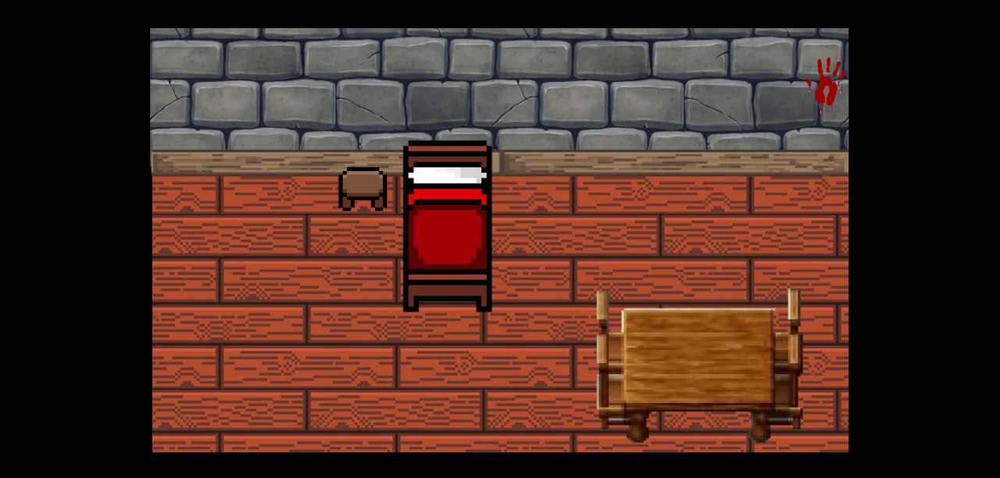
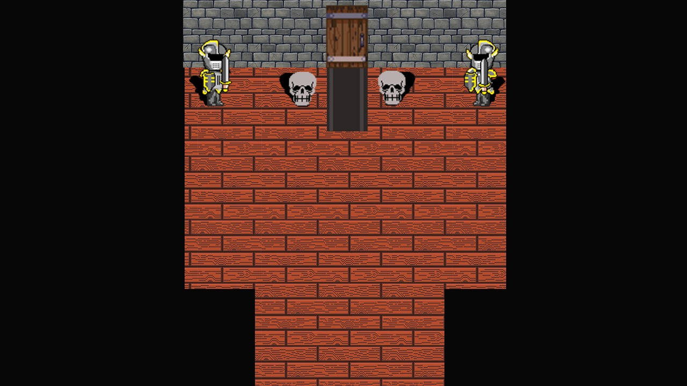
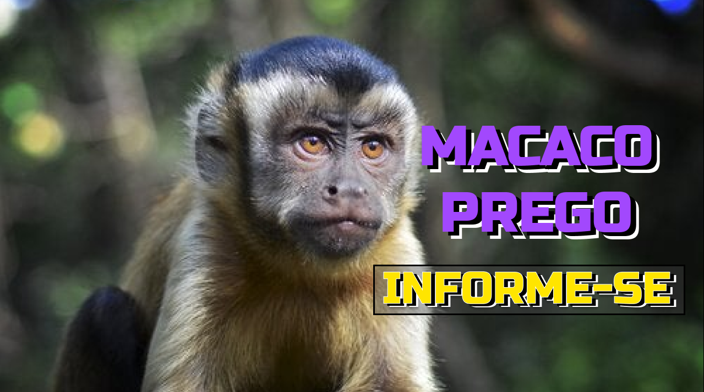
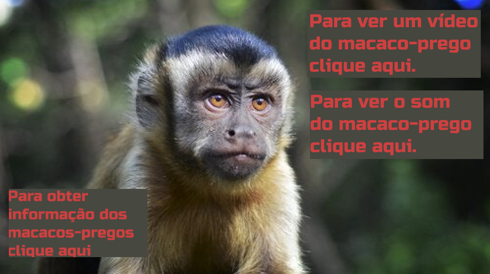
> O projeto III utilizará a linguagem c# com o uso do Windows Forms. Deverá ter um formulario inicial com menu (MenuStrip) e no mínimo 10 opções de submenu que abrirá novos formulários. Cada um desses novos formulários deverá conter um componente com um evento e deverá ter no mínimo 10 formulários com componentes distintos.
Menu do Aplicativo
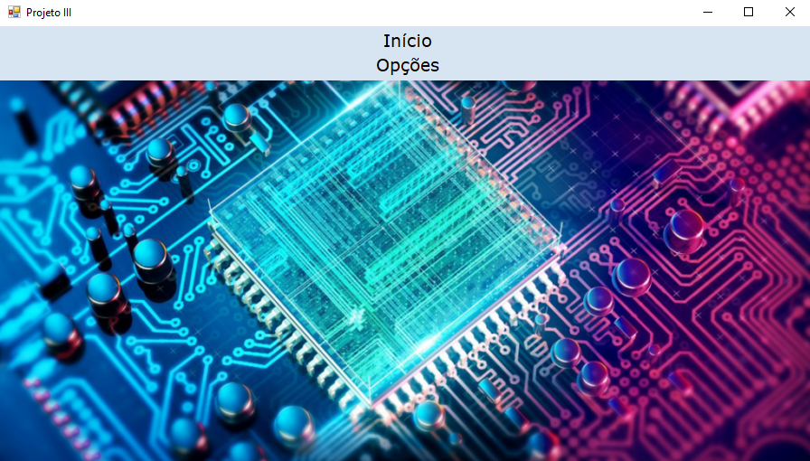
Opções do botão de 'iniciar' do menu
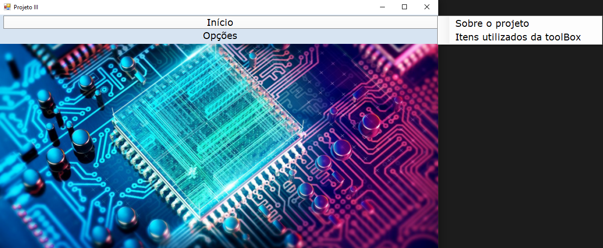
Opções do botão de 'opções' do menu
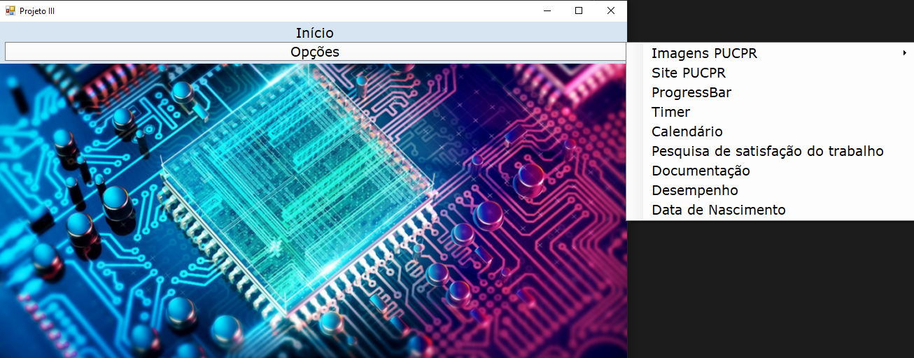
Função para entrar no site da PUC pelo Aplicativo
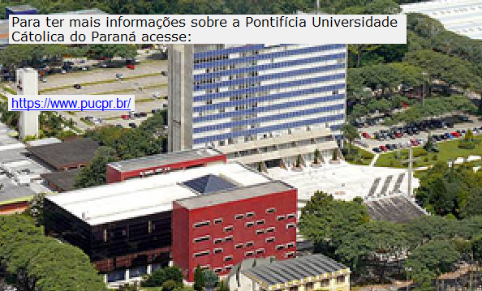
Função cronômetro do Aplicativo
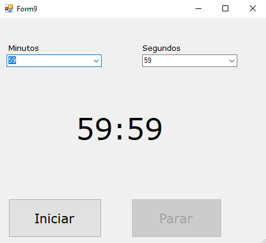> Nesse trabalho devemos criar um website apenas o font-end utilizando HTML e CSS, sem necessidade de possuir JavaScript, PHP, NodeJS, TypeScript, etc. O website deverá ser hospedado em um provedor gratuito. O próprio aluno deverá encontraro provedor para hospedar o seu website.
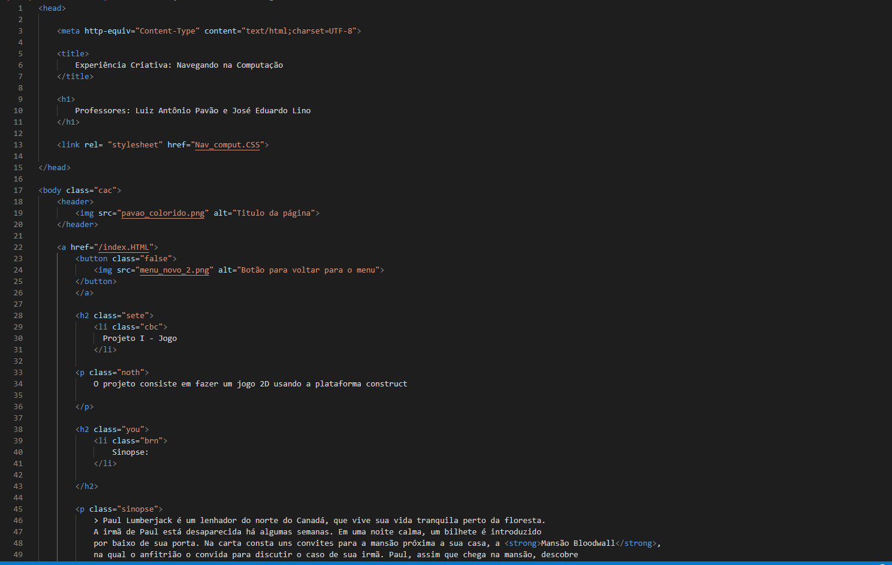
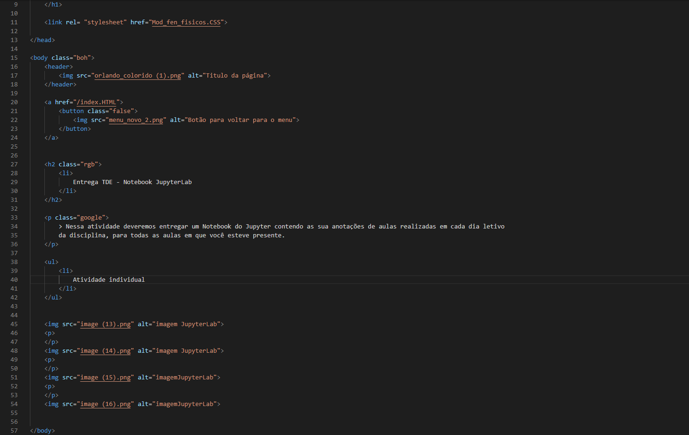